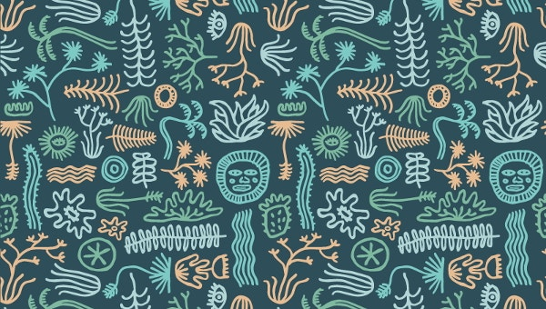

Origami Instruction and Diagrams
Step by Step diagrams are probably the most popular and easiest to follow way to show how to fold things out of paper.
Trying to find good origami instructions on the internet can be a lot of work though. To help your search we've put together the largest Database of free origami diagrams anywhere on the internet.

Camel
- Camel's ears are furry
- Camel can move easily across the sand because of its specially designed feet
- When they find water, they will drink as much as possible

Chameleon
- chameleons reptiles that are part of the iguana saborder
- Chaanging skin color is an important part of communication among chameleons
- Most chameleons have a prehensile tail that they use to wrap around tree branches

Pigeon
- chameleons reptiles that are part of the iguana saborder
- Chaanging skin color is an important part of communication among chameleons
- Most chameleons have a prehensile tail that they use to wrap around tree branches